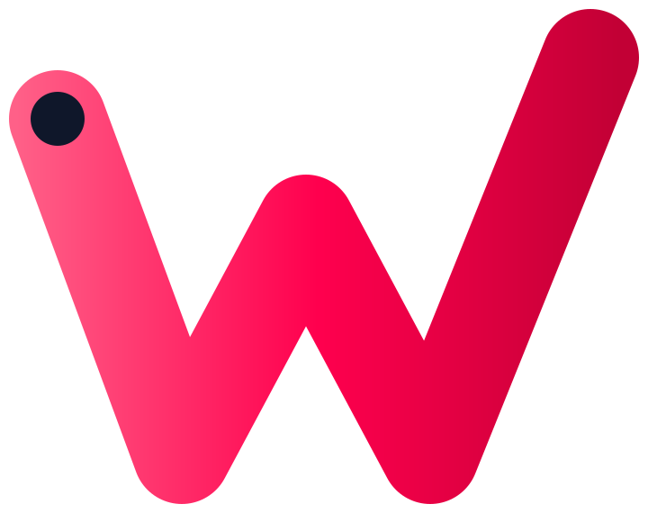
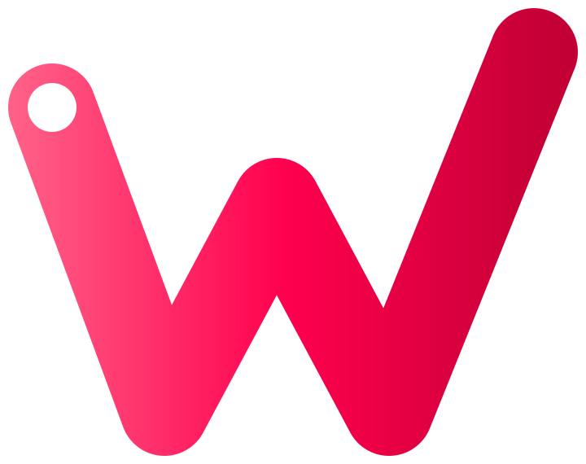
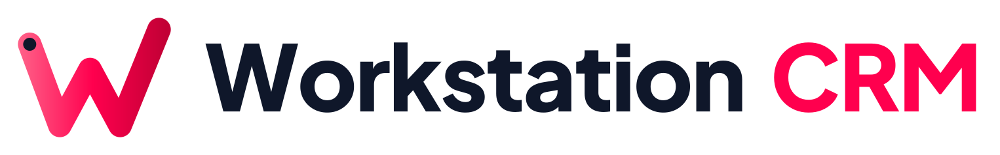
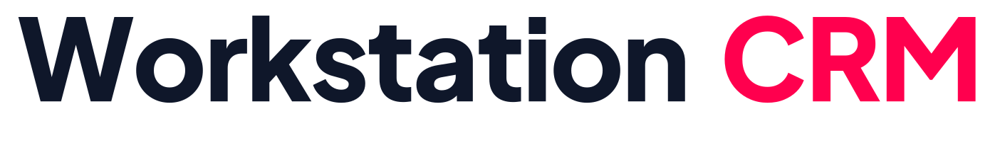
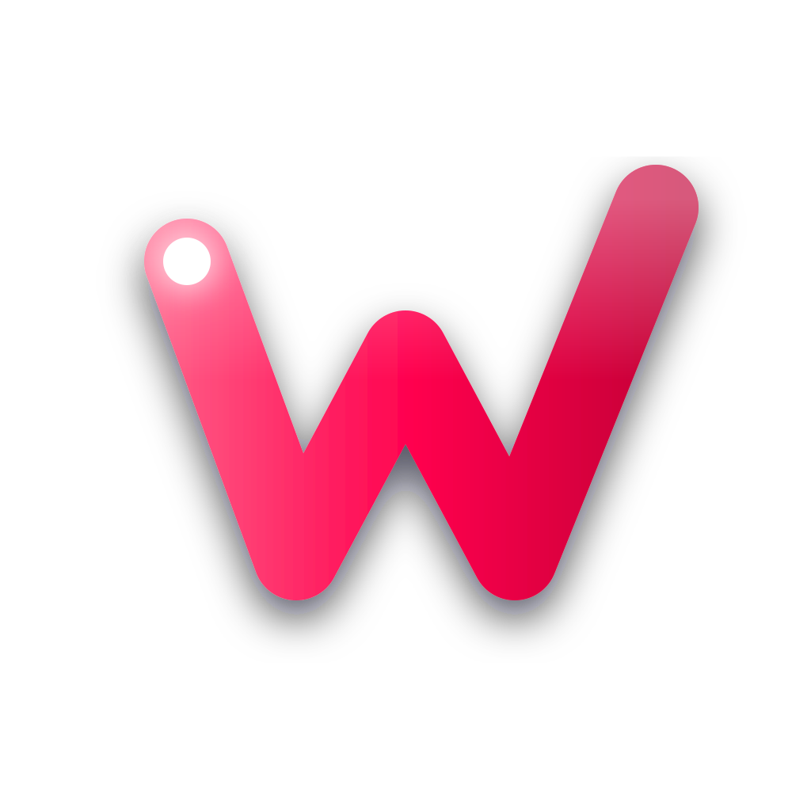
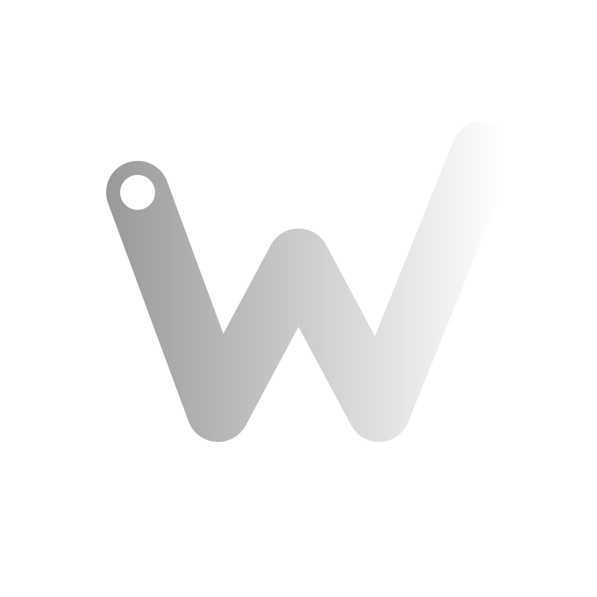
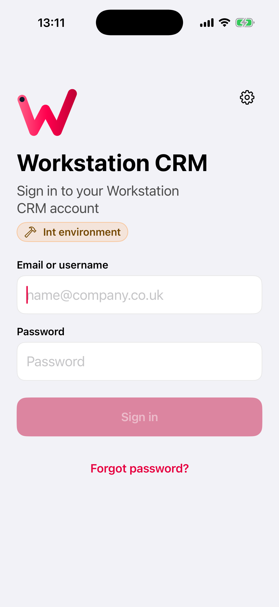
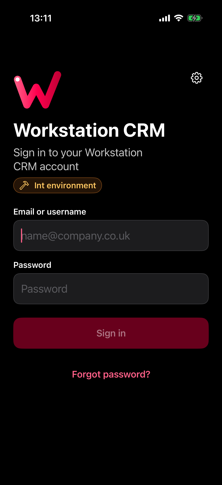
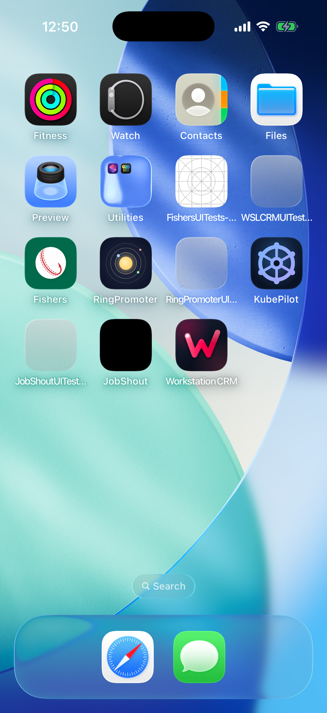

The mark
A “W” drawn as one continuous route. It starts at a dot (the job, the place someone is heading) and its last stroke climbs past the first, so the W ends as a tick. Booked to done, in one line.

logo-glyph.svg: ink start dot on light
logo-glyph-on-dark.svg: white start dot on darklogo-mono.svg: one colour, currentColorLogo
The lockup is the default. “Workstation” is ink (white on dark), “CRM” is the primary pink. Plus Jakarta Sans ExtraBold, outlined.

lockup.svglockup-on-dark.svg
wordmark.svg
wordmark-on-dark.svgApp icon
Full bleed for iOS, which rounds the corners. The night background, a soft pink glow and a lifted route with a light sheen. iOS 18 dark and tinted versions ship with it.


Colour
The OpsAPI dashboard palette, so the phone and the web look like one product.
Status colours mean status and nothing else, and always come with an icon and words.
● On track▲ At risk■ Late · £7,000 at riskType
Plus Jakarta Sans for the brand and the web dashboard. Inside the iOS app, SF Pro, so Dynamic Type and Bold Text work.
In the app
The tint, primary buttons and the sign-in mark come from the brand. White-label builds swap in their own name, icon, mark and colours from one xcconfig.



Voice
Plain, confident, practical. Say what happened and what's next.
| Do | Don't |
|---|---|
| Visit checked in at 09:12. Photos upload when you're back online. | Success! Your check-in has been processed! |
| 7 Mill Lane is £7,000 at risk. The buyer's AML check is missing. | Warning: deal health degraded. |
| Couldn't reach the server. Your changes are saved on this phone. | Error -1009. |
Don't
Recolour the route · flip or rotate it · move the start dot · outline it or add effects · stretch the lockup · set the full-colour logo on busy photos (use the mono mark).